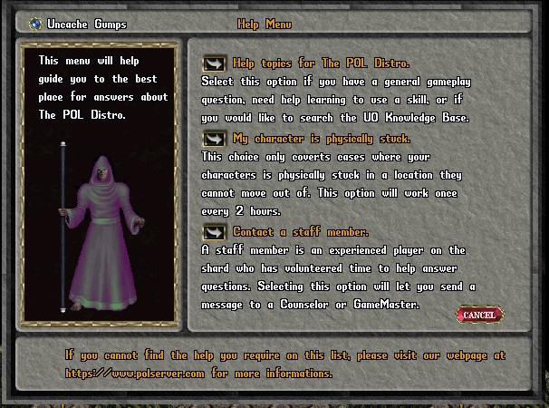
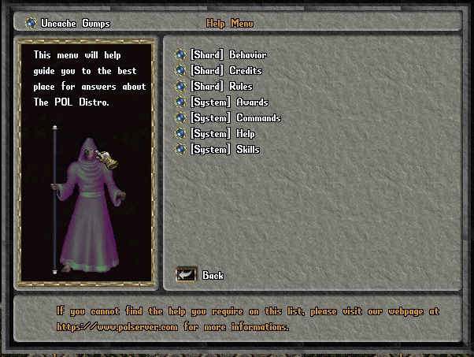
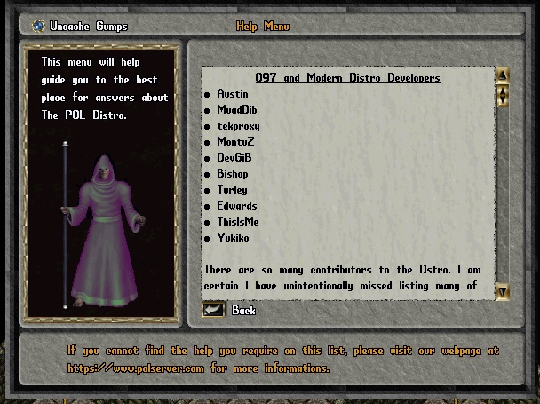
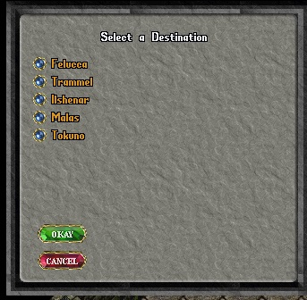
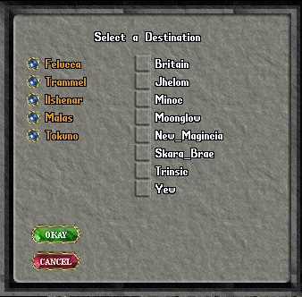
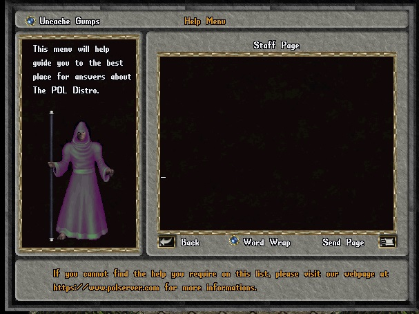

The Main Help
Gump.
When a player clicks on the Help button in the paper doll,
this gump will appear:

If the player chooses the first option, this gump will appear:

When a topic is chosen, for example Credits, the
contents of the appropriate topic file will be displayed:

See Help Topics Files for information on setting-up
and creating topics for your shard.
Should the player choose the second option in the main help gump, My
character is physically stuck and cannot move, he, or
she, will be presented with the following gump:

This allows the player to choose a facet. Once a facet is selected,
Felucca in the next example, The player can then choose a moon gate.

Once a moon gate is chosen and the OKAY button is pressed, the
character will be teleported to the moon gate in that facet.
After choosing the moon gate, the player will receive a message that
they will be teleported within 5 minutes. This delay prevents the
player from cheating by using the “I am stuck” option to make a
hasty escape from a fight or some other hostile situation. After the
player is teleported to a moon gate using this option he or she will
not be able to use the “I am stuck” help option for two hours. The
“player stuck” option works with the jail keeper system to prevent
jailed players from using it to break out of jail.
The third option in the main help gump allows the player to send a
page to a staff member should they need additional help. This gump
will appear if the third option is chosen:

Pages can be viewed and responded to via the Help Queue.